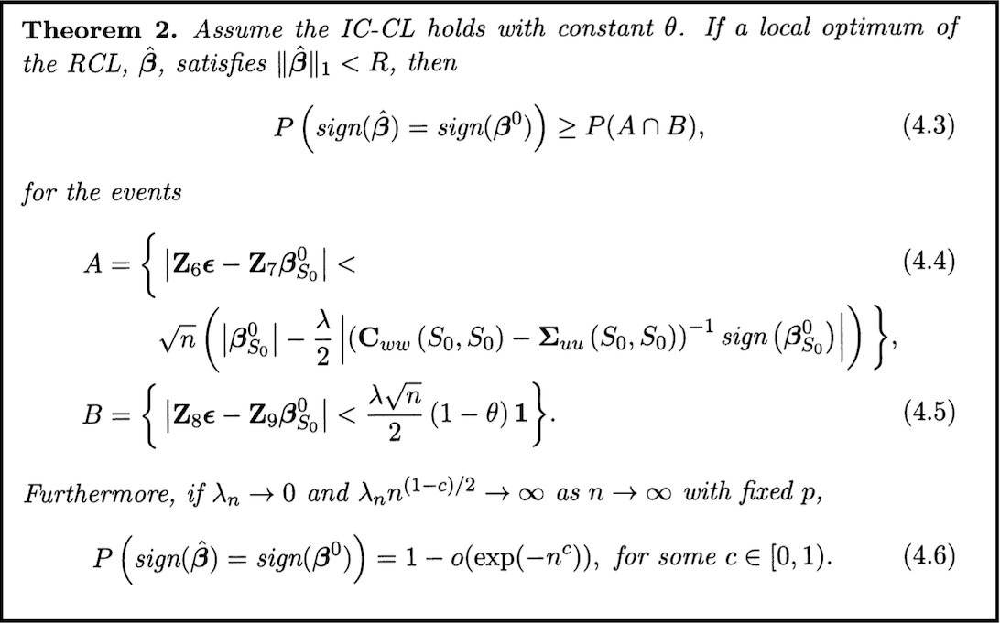

Download
Abstract
Regression with the lasso penalty is a popular tool for performing dimension reduction when the number of covariates is large. In many applications of the lasso, like in genomics, covariates are subject to measurement error. We study the impact of measurement error on linear regression with the lasso penalty, both analytically and in simulation experiments. A simple method of correction for measurement error in the lasso is then considered. In the large sample limit, the corrected lasso yields sign consistent covariate selection under conditions very similar to the lasso with perfect measurements, whereas the uncorrected lasso requires much more stringent conditions on the covariance structure of the data. Finally, we suggest methods to correct for measurement error in generalized linear models with the lasso penalty, which we study empirically in simulation experiments with logistic regression, and also apply to a classification problem with microarray data. We see that the corrected lasso selects less false positives than the standard lasso, at a similar level of true positives. The corrected lasso can therefore be used to obtain more conservative covariate selection in genomic analysis.
Theorem 2

Citation
Sørensen, Ø., Frigessi, A., & Thoresen, M. (2015). MEASUREMENT ERROR IN LASSO: IMPACT AND LIKELIHOOD BIAS CORRECTION. Statistica Sinica, 25(2), 809–829.
@article{83360595-395a-3086-a118-8990ea3db338,
ISSN = {10170405, 19968507},
URL = {http://www.jstor.org/stable/24311046},
author = {Øystein Sørensen and Arnoldo Frigessi and Magne Thoresen},
journal = {Statistica Sinica},
number = {2},
pages = {809--829},
publisher = {Institute of Statistical Science, Academia Sinica},
title = {MEASUREMENT ERROR IN LASSO: IMPACT AND LIKELIHOOD BIAS CORRECTION},
urldate = {2025-03-22},
volume = {25},
year = {2015}
}